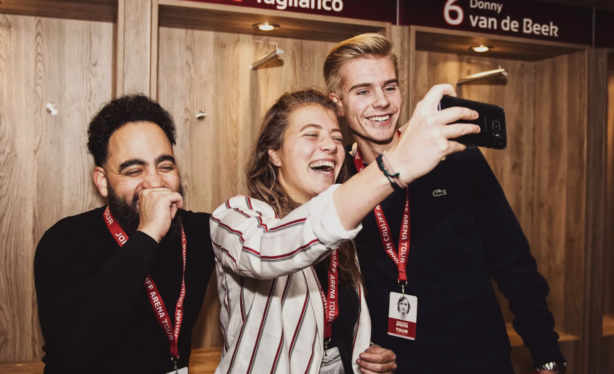

Oranje in de ArenA
Koop nu jouw kaarten voor Nederland - Ierland
De baas van het veld
Op 13 en 14 mei is de grasmat van de ArenA te huur
Ajax - FC Volendam
vs
Ajax do 2 November 2023
AMF: The next decade
Dance za 21 oktober 2023
Johan Cruijff ArenA
Thuisbasis van Ajax, het Nederlands elftal, legendarische concerten en inspirerende zakelijke events. De
Johan Cruijff ArenA wil met innovaties, duurzame initiatieven en maatschappelijke betrokkenheid het
verschil maken binnen en buiten het stadion.
Binnenkort In de ArenA
Alle wedstrijden en Events
Ajax - Olympique de Marseille
Europa League do 21 september 2023
21/9
Ajax - Feyenoord
Ajax zo 24 september 2023
24/9
Ajax - FC Volendam
Ajax wo 27 september 2023
27/9
Ajax - AZ
Ajax zo 8 oktober 2023
8/10
Nederland - Frankrijk
Oranje vr 13 oktober 2023
13/10
bekijk de kalender

ontdek de arena
Stadiontours
Heb je altijd al de Johan Cruijff ArenA willen bezoeken? Verken alle hoogtepunten van het stadion
tijdens een tour.
Boek je tickets
Nieuws & updates
de johan cruijff arena is altijd in beweging
Ajax legend mural onthuld in de ArenA
Johan Cruijff arena
lees verder
Bezoekersonderzoek concerten
Johan Cruijff arena
lees verder
ArenA helpt concerten verder te verduurzamen
Duurzaam
lees verder
meer nieuws
Unieke locatie voor jouw evenement
Groots & Stijlvol
Een buitengewone plek waar het applaus en gejuich nog nagalmen. In de Johan Cruijff ArenA vinden al meer
dan 25 jaar de meest onvergetelijke zakelijke evenementen plaats.
Ontdek de mogelijkheden
Studio & Hybride
Een combinatie tussen live events en studio settingen. Met of zonder gasten in de zaal. Ervaar
de nieuwste techniek om...
lees meer
Congres op maat
Groots uitpakken met een congres, symposium of seminar op maat? De Johan Cruijff ArenA heeft
alles in huis voor...
lees meer
Exclusief vergaderen
Een verrassende directie- of heisessie, aandeelhoudersvergadering of andere business meeting
organiseren? Een...
lees meer
Diner & Receptie
Van een exclusieve setting met fantastisch uitzicht tot een groots diner voor 1.000 gasten. Wij
zorger ervoor dat een diner of...
lees meer
Gala & Bedrijfsfeest
Een gala of bedrijfsfeest is niet compleet zonder stijlvolle locatie. De Johan Cruijff ArenA
biedt een ongekende sfeer om een...
lees meer
Het stadion van de toekomst
Koploper in vooruitgang
meer informatie
Innovatie
Als living lab bedenken, ontwerpen, testen en implementeren we innovaties die het verschil
maken.
lees meer
Duurzaamheid
Dankzij onze data- en innovatiegedreven aanpak zijn we een van de meest duurzame stadions ter
wereld.
lees meer
Maatschappelijk
We vinden het belangrijk bij te dragen aan een leefbare stad en ontwikkelingskansen voor
iedereen.
lees meer
Kwaliteit
Door ons te blijven ontwikkelen streven we altijd naar de hoogste kwaliteit voor onze bezoekers,
klanten en partners.
lees meer
Blijf op de hoogte
Ontvang jij de nieuwsbrief al?
Blijf op de hoogte van de ontwikkelingen binnen en buiten het stadion, exclusieve content en nog veel
meer!
Emailadres
Johan Cruijff ArenA Business Partners